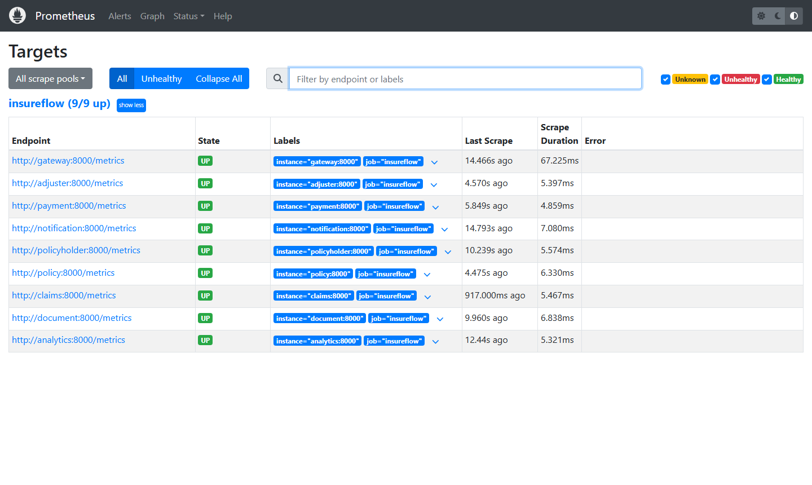

SUSTENTACIÓN FINAL · ARQUITECTURA Y MODELAMIENTO DE SOFTWARE
Plataforma de seguros de auto, hogar y vida con microservicios
Cotización, compra, pagos, siniestros y peritaje 100% en línea, con 8 microservicios independientes, un API Gateway y prácticas DevOps.
Usa las flechas ← → del teclado para avanzar.
El problema y los usuarios
Momento 1 de 5 — Contexto del problema y necesidades
El problema
✗ Contratar un seguro es lento
El cliente cotiza por teléfono o en oficina, espera días por una propuesta y llena formularios en papel.
✗ Siniestros sin trazabilidad
El asegurado no sabe en qué va su reclamación: no ve el perito asignado, la inspección ni el pago.
✗ Pagos y documentos dispersos
Los cobros de primas, las indemnizaciones y los comprobantes se manejan en sistemas separados.
✗ Pocos datos para decidir
Sin indicadores de siniestralidad, tiempos de resolución ni alertas de fraude, la aseguradora decide a ciegas.
Los usuarios
Cliente (asegurado)
Quiere cotizar y comprar en minutos, pagar en línea, reportar un siniestro y seguir su caso desde el celular.
Gestor de seguros
Administra asegurados, pólizas, pagos y la bandeja de siniestros; aprueba, rechaza o pide documentos.
Perito
Recibe inspecciones asignadas automáticamente y carga su informe de evaluación de daños.
Administrador
Supervisa el negocio (primas, siniestralidad, fraude), el estado de la plataforma y las cuentas del personal.
Objetivo, justificación y alcance
Momento 1 de 5 — Necesidades de solución
Objetivo principal
Construir una plataforma web de seguros que permita cotizar, contratar, pagar y gestionar siniestros de punta a punta, con servicios independientes, escalables y monitoreados, desplegados automáticamente en la nube.
Independencia
Si Pagos falla, el cliente sigue cotizando y reportando siniestros.
Aislamiento de datos
Cada microservicio tiene su propia base PostgreSQL; nadie lee la base de otro.
Despliegue independiente
Cada servicio tiene su repositorio, su pipeline y su despliegue en Render.
Coordinación
La resolución de un siniestro es una Saga coordinada por eventos.
Dentro del alcance
- Sitio público y cotizador de auto, hogar y vida (3 planes)
- Portal del cliente: compra, pagos, siniestros, documentos, notificaciones
- Portal de gestión con roles: gestor, perito y administrador
- 8 microservicios + API Gateway con JWT
- CI/CD, pruebas con cobertura y monitoreo con Prometheus y Grafana
Fuera del alcance (versión académica)
- Cobro real con dinero: la pasarela está simulada detrás de una interfaz intercambiable
- Envío real de SMS (el correo SMTP es opcional por configuración)
- App móvil nativa para peritos: usan el portal web responsive
Arquitectura general del sistema
Momento 2 de 5 — Haz clic en cada bloque para ver su detalle
Función de cada microservicio
Momento 2 de 5 — Responsabilidad única por dominio (SRP)
Comunicación entre servicios y uso de APIs
Momento 2 de 5 — REST síncrono + eventos asíncronos
REST síncrono (cuando se necesita la respuesta ya)
Ejemplo: Siniestros → Pólizas valida que la póliza tenga cobertura vigente antes de aceptar el siniestro (GET /api/v1/polizas/{id}/cobertura). Todas las APIs usan el prefijo versionado /api/v1/ y responden errores con formato estándar {code, message}.
- Timeout: 3 s (60 s en Render por el arranque en frío)
- Reintentos: 3 intentos con backoff exponencial (0,5 s · 1 s · 2 s)
- Circuit breaker: closed → open tras 3 fallos → half-open a los 30 s
Archivo: comun/clientes.py
Eventos asíncronos (consistencia eventual)
El dueño del dato publica un evento y los interesados reaccionan sin conocerse entre sí (bajo acoplamiento). Celery reintenta la entrega hasta 5 veces y cada evento se procesa una sola vez (idempotencia con EventoProcesado).
Archivos: comun/eventos.py, comun/views.py, <app>/handlers.py
| Evento | Lo publica | Lo consumen |
|---|---|---|
| policy.issued / renewed / cancelled | Pólizas | Notificaciones, Analítica |
| policyholder.created / kyc_updated | Asegurados | — (auditoría) |
| claim.opened | Siniestros | Peritaje (asigna perito), Notificaciones, Analítica |
| inspection.scheduled / completed | Peritaje | Siniestros (avanza y aprueba), Documentación (guarda el informe) |
| claim.approved / rejected / documentation_requested | Siniestros | Pagos (indemniza), Notificaciones, Analítica |
| payment.completed / failed | Pagos | Siniestros (cierra o compensa), Documentación (comprobante), Notificaciones, Analítica |
| document.uploaded | Documentación | Siniestros |
Patrón SAGA: resolución de un siniestro
Momento 2 de 5 — Saga por coreografía (sin orquestador central)
claim.openedinspection.scheduledinspection.completed → Siniestros aprueba → claim.approvedpayment.completedAcción compensatoria
Si el pago de la indemnización falla (payment.failed), siniestros/handlers.py → on_payment_failed devuelve el caso a "aprobado, pendiente de pago", lo registra en el historial (auditoría) y se notifica para intervención manual.
¿Por qué coreografía?
Cada servicio solo conoce los eventos, no la lógica de los demás: Siniestros no sabe cómo se asigna un perito. Agregar un nuevo consumidor (por ejemplo, Analítica) no exige cambiar a los productores.
Manejo de bases de datos
Momento 2 de 5 — Database per service
Una base por microservicio
8 bases PostgreSQL independientes (policy_db, claims_db, payment_db…). En Render, los servicios que comparten servidor tienen cada uno su propia base (DB_NAME), sin compartir tablas.
Integridad sin joins
Identificadores globales UUID y referencias externas (FK-ext): siniestro.id_poliza guarda el UUID sin llave foránea física; la validación se hace por API contra el dueño del dato.
Normalización
3FN en los servicios transaccionales (beneficiarios, historial de estados, pagos e indemnizaciones separados). Analítica usa un esquema desnormalizado tipo estrella para reportes.
Integridad en el modelo
Índices y restricciones CHECK del diseño: status IN (...), premium >= 0, porcentaje BETWEEN 0 AND 100, national_id UNIQUE, vigencia válida.
Auditoría
claim_status_history guarda cada transición del siniestro; document_access_log es de solo inserción: el código impide UPDATE y DELETE.
Migraciones y respaldo
Migraciones de Django versionadas y aplicadas al arrancar el contenedor. Cada repositorio trae datos/datos_ejemplo.json y datos/respaldo.sql (pg_dump).
API Gateway, autenticación y autorización
Momento 2 de 5 — Punto único de entrada
Qué hace el gateway
- Enruta
/api/v1/<servicio>/…al microservicio correcto (proxy/rutas.py) - Valida firma y vigencia del JWT: token inválido → 401 sin llamar al microservicio
- Rate limiting: 60 solicitudes/min anónimas y 600/min por usuario
- Logging centralizado en JSON: método, ruta, usuario, código, duración y
request_id - CORS configurable por variable de entorno
- Sirve el frontend y reintenta mientras los servicios gratuitos despiertan
Autenticación y autorización
- JWT + refresh token (simplejwt): acceso de 30 min y refresh de 7 días
- Contraseñas con bcrypt (
BCryptSHA256PasswordHasher), mínimo 8 caracteres - Roles: asegurado, agente (gestor), perito y admin
- Permisos por objeto (
proxy/permisos.py): un cliente solo ve sus pólizas y siniestros; un perito solo sus inspecciones → 403 - Sesiones separadas: los clientes no pueden entrar a
/gestion - Los eventos internos se autentican con
X-Internal-Token
Protección contra ataques
SQL Injection: solo se usa el ORM de Django (consultas parametrizadas). XSS: React escapa el contenido y los serializers validan la entrada. CSRF: la API usa JWT en el encabezado y no cookies. Secretos: variables de entorno en Render y GitHub Secrets, nunca en el código (.env.example). Datos sensibles: los documentos se cifran con Fernet (AES).
Stack tecnológico y justificación
Momento 3 de 5
| Capa | Tecnología | ¿Por qué la elegimos? |
|---|---|---|
| Lenguajes | Python 3.12 · TypeScript | Python: productivo y con un ecosistema maduro para APIs. TypeScript: tipos en el frontend que evitan errores al consumir la API. |
| Backend | Django 6 + Django REST Framework | ORM seguro (evita SQL injection), migraciones versionadas, serializers para validar datos y autenticación lista. Es la misma base en los 8 servicios, así el equipo cambia de servicio sin curva de aprendizaje. |
| Base de datos | PostgreSQL (SQLite solo en pruebas) | Relacional, transaccional (ACID), con CHECK, índices y UUID; gestionado en Render. |
| Mensajería | Celery + Redis | Colas por servicio, reintentos con backoff y ejecución asíncrona de eventos; base de la Saga. |
| Frontend | React 18 + Vite + Tailwind CSS | Componentes reutilizables, build rápido y un diseño consistente con la marca (azul y rojo). |
| Seguridad | simplejwt · bcrypt · cryptography (Fernet) · django-cors-headers | Estándares probados para tokens, hash de contraseñas y cifrado de documentos. |
| Contenedores | Docker · Docker Compose | El mismo contenedor corre en local y en Render; Compose levanta los 9 servicios + Postgres + Redis + Prometheus + Grafana. |
| CI/CD | GitHub Actions · GHCR · CodeQL · pip-audit · coverage.py · flake8 | Integrado con los repositorios: pruebas, cobertura, seguridad, imagen versionada y despliegue automático. |
| Nube | Render (web services + PostgreSQL + Key Value) | Despliegue de contenedores Docker con plan gratuito, Blueprints (render.yaml) y Deploy Hooks para CD. |
| Observabilidad | Prometheus · Grafana · prometheus-client · logs JSON | Métricas estándar de la industria, dashboards y alertas sobre los mismos datos. |
| Documentación | drf-spectacular (OpenAPI 3 + Swagger UI) | La documentación de la API se genera del código, así que siempre está al día. |
Pruebas automatizadas y cobertura
Momento 4 de 5 — 2 unitarias con mocks + 1 de integración por microservicio, en tests/
| Microservicio | Prueba unitaria 1 | Prueba unitaria 2 | Prueba de integración | Pruebas | Cobertura |
|---|
Comando: USE_SQLITE=1 CELERY_EAGER=1 coverage run manage.py test -v 2 && coverage report. La evidencia está en evidencias/evidencia_pruebas.txt y evidencias/reporte_cobertura/ de cada repositorio; en GitHub Actions la cobertura aparece en el resumen de la ejecución y como artefacto reporte-cobertura. Mocks usados: unittest.mock sobre otros microservicios, el bus de eventos, la pasarela de pagos y el proveedor de SMS.
Pipeline CI/CD con GitHub Actions
Momento 4 de 5 — Solo se despliega si las pruebas pasan
# .github/workflows/ci.yml (cada push y pull request) on: push [main, develop, feature/**, hotfix/**] · pull_request jobs: lint → flake8 pruebas → coverage run manage.py test -v 2 coverage report + artefacto reporte-cobertura seguridad → pip-audit -r requirements.txt docker → build (y push a GHCR en main, tag = commit) # .github/workflows/deploy.yml on: workflow_run: [CI] completed · branches: [main] if: conclusion == 'success' # si CI falla, NO despliega curl -X POST $RENDER_DEPLOY_HOOK_URL # secreto en GitHub espera a que /health responda # .github/workflows/codeql.yml → análisis estático de seguridad
Estrategia de ramas (GitFlow)
main = producción · develop = integración · feature/* = funcionalidades · hotfix/* = correcciones urgentes. Los cambios entran por pull request con el pipeline en verde. Los secretos (Deploy Hook, tokens) viven en GitHub Secrets.

Pestaña Actions: CI en verde en main y develop; la rama de demostración en rojo.

CI exitoso: lint → pruebas + seguridad → Docker.

Prueba fallida: el pipeline se detiene y no se construye ni se despliega.
Monitoreo con Prometheus y Grafana
Momento 4 de 5 — Evidencia con datos reales

Dashboard «InsureFlow — Observabilidad»: servicios activos, siniestros, pagos, errores 5xx, solicitudes por segundo, latencia p95 y latencia entre servicios.

Prometheus: los 9 targets (/metrics) en estado UP.
Métricas
insureflow_http_requests_total (peticiones y tasa de errores por endpoint), insureflow_http_request_duration_seconds (tiempos de respuesta), up (disponibilidad), insureflow_sync_call_duration_seconds, eventos publicados y recibidos y insureflow_claims_reported_total (negocio).
Alertas (alertas.yml)
ServicioCaido · ErroresFrecuentes · ErroresEnPagos · LlamadaSincronaLenta.
Configuración versionada
monitoreo/prometheus.yml (targets), alertas.yml, provisión del datasource y del dashboard de Grafana, y comun/metricas.py en cada servicio. Health checks: /health y /health/servicios.
Demostración funcional en vivo
Momento 5 de 5 — Requerimientos validados en producción
Enlaces de la demostración
- Sitio y portal del cliente
- Portal de gestión: gestor, perito y admin
- Estado de los 8 microservicios
- Swagger de un microservicio (Pagos)
Usuarios de prueba: el cliente se registra en vivo; gestor (gestor), peritos (perito.auto, perito.hogar, perito.vida) y admin se entregan al docente el día de la sustentación.
Requerimientos funcionales a validar
| Crear | Registrar un cliente, emitir una póliza y reportar un siniestro. |
| Consultar | Mis seguros, historial de pagos, seguimiento del caso y analítica. |
| Actualizar | Datos de contacto, verificar identidad (KYC), renovar una póliza y cambiar el estado de un siniestro. |
| Cancelar | Cancelar una póliza, rechazar un siniestro y desactivar un colaborador. |
| Comunicar | Siniestro → Peritaje → Siniestros → Pagos → Documentación → Notificaciones (Saga). |
Manejo de errores y casos alternos
Sin cobertura vigente: el siniestro se rechaza (422) por la validación síncrona con Pólizas.
Servicio caído: timeout, reintentos y circuit breaker → 503 con un mensaje claro y sin datos inconsistentes.
Pago rechazado: payment.failed → compensación de la Saga.
Sin token o token vencido: 401 en el gateway.
Recurso de otro cliente: 403 por los permisos por objeto.
Datos inválidos: 400 con detalle (fechas, porcentajes, cédula duplicada).
Matriz de cumplimiento
Parte A.1 — Requerimientos del documento de arquitectura por microservicio
| Microservicio | Asignados | Cumplidos | % cumplimiento | Elementos técnicos | Pendiente o parcial |
|---|
Los requerimientos de cada servicio son los del documento de arquitectura: endpoints (sección 4), eventos (5.10), modelo de datos (sección 5) y reglas de negocio. Los marcados como parciales funcionan con una implementación simulada o alternativa, que se explica en la última columna.
Repositorios y enlaces de despliegue
Parte A.2 y A.3 — Un repositorio, una base y un despliegue por microservicio
| Microservicio | Repositorio (GitHub) | Despliegue (Render) | Documentación API |
|---|
Cada repositorio incluye
README (descripción, tecnologías, instalación, ejecución, endpoints, variables), .env.example, .gitignore, tests/, evidencias/, datos/ (ejemplo y respaldo), Dockerfile y render.yaml.
Integración local
InsureFlow_Local/docker-compose.yml levanta todo: 9 servicios, PostgreSQL, Redis, Prometheus y Grafana.
Frontend
InsureFlow_Frontend (React + TS). Se compila dentro del gateway y se publica en el mismo enlace de producción.
Conclusiones
- 8 microservicios independientes, cada uno con su base de datos, su repositorio y su despliegue.
- Saga por eventos con compensación para la resolución de siniestros.
- Gateway con JWT, roles y permisos por objeto; sitio, portal del cliente y portal de gestión separados.
- CI/CD: pruebas unitarias y de integración con cobertura antes de cada despliegue.
- Observabilidad con Prometheus, Grafana, health checks y logs estructurados.
¡Gracias! ¿Preguntas?